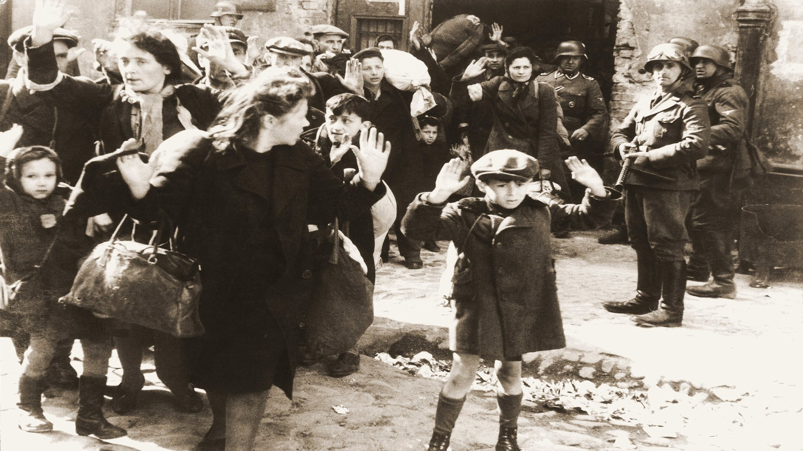

-

Jorda er flat
Det at jorda er flat er en av de mest kjente konspirasjonsteoriene. Grunnen til at mange er tror på denne teorien er på grunn av Youtube. i en intervju kom det frem at de som tror på teorien har sett på andre konspirasjonsteori videoer også blitt foreslått video av at jorda er flat av Youtube.
-

Holocaust
Det er en konspirasjonsteori som handler om at Holocaust aldri fant sted. konspirasjonsteorien deles i 4 deler. Den første delen handler om at tallet på antall jøder som ble drept under andre verdenskrig er overdrevet. den andre delen er at jødene ikke ble drept, men døde av an annen grunn som f.eks. en sykdom. Den tredje delen handler om at Adolf Hitler var systematisk. folk mener at han jobbet systematisk med å drepe jøder i Europa. den siste delen handler om at Jødene gjorde alt for å bli mer kjent.
-

Månelanding
Mange tror at månelanding er falsk. Folk mener at det skjedde i en filmstudio. grunnen til dette er fordi flagget vaier i vinden. Folk mener at man kan se at noen av bildene har blitt manipulert.